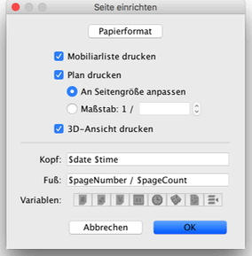
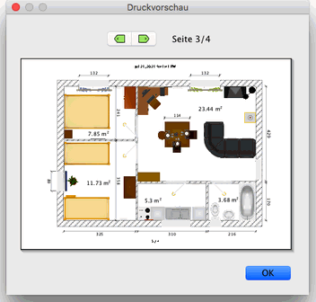

|
|
Drucken einer Wohnung | ||
|
Um eine Wohnung zu drucken, w�hlen Sie Datei > Drucken….
Standardm��ig druckt Sweet Home 3D die Mobiliarliste, den Wohnungsplan und die
derzeitige 3D-Ansicht in der Standardpapiergr��e, R�nder und Ausrichtung. 
Im Dialog Seite einrichten k�nnen Sie nun die Papiergr��e und Ausrichtung
anpassen, indem Sie auf die Schaltfl�che Papierformat klicken. Sie k�nnen
au�erdem ausw�hlen, ob die Mobiliarliste, der Wohnungsplan und die 3D-Ansicht einer
Wohnung gedruckt werden soll oder nicht. Wenn Sie die automatische Skalierung des
Wohnungsplanes nicht auswählen möchten, können Sie eine andere
Skalierung auswählen.
Damit Sie nicht den exakten Namen einer Variable tippen müssen, können Sie die Variablenschaltfl�chen unter den Kopf- und Fußzeilenfeldern benutzen. Da das $-Zeichen reserviert ist für Variablen, m�ssen Sie den $$-Code benutzen, um ein $-Zeichen zu drucken. Um eine Druckvorschau Ihrer Einstellungen zu bekommen, w�hlen Sie Datei > Druckvorschau….  Im Druckvorschau-Fesnter sehen Sie, wie eine Wohnung gedruckt werden w�rde. Um die Vorschauseite zu �ndern, klicken Sie auf die Pfeile oben am Fenster oder dr�cken Sie die Pfeiltasten. |
|